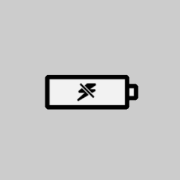

the Platform for University Projects
FIND PEOPLE, PROJECTS, PURPOSE
The Platform
-
The Problem
Universities lack a standardized process to describe and publish topics for Bachelor and Master Theses and semester projects. Struggling with department-specific websites and out-of-date Excel sheets, students and university staff use phone calls and emails to communicate. The results are multiple, non-standardized, inefficient processes to combine students and project topics. Students themselves have trouble finding a suitable topic which matches their passion and interests. They end up investing a lot of effort in the search of topics and completion of projects with which they are not satisfied. Resources are wasted and the quality of completed projects and written papers is lowered.
-

The Solution
The BluePlatform operates as an interactive platform between universities and students. Its goal is to facilitate the matching process between university projects and students to achieve a perfect connection between project topics and students’ interests and passion. The BluePlatform provides a simple interface to publish, search and apply for university projects. Both user groups – university staff and students – are supported with our solution during their involvement in the process.
The BluePlatform’s vision is to provide optimal matching of all stakeholders, such that the projects are executed with passion, conviction and ultimately success. -
Universities
Universities profit from a unified and simplified publication process for project topics. Administrative tasks are reduced to a minimum. Our platform stores and presents all information about a Bachelor or Master Thesis or a semester project, lists applicants, enables initial contact between project responsibles and selected students. The BluePlatform works as a smart selection, maintenance and tracking tool to match project topics with students.
-
Students
Students find their research topic or project easier and faster. The BluePlatform is the one single source of information to find a suitable university project. It facilitates an interactive matching process and helps putting the right student on the right project. Spending weeks digging through multiple websites, emails and excel sheets in search for a suitable subject is a thing of the past. The BluePlatform simplifies the search process and helps matching a student’s individual interest with the optimal project, such that academic topics and student’s passion purposefully connect and lead to a satisfying result.
We make it easy for universities to find the best students for their projects.
We connect people, projects and purpose.
Use Cases
-
BUREAUCRACY
Thomas is a Professor at a University in the UK... -
QUALITY
James is a lecturer at a University in... -
RESOURCES
Barbara is a secretary at the dean’s office... -
FRUSTRATION
Peter is about to finish his bachelor degree... - 
ENERGY
Jessica studies Communication and Mass Media... -
TUTOR MISMATCH
Steven is studying Political Sciences at...

FRUSTRATION
Peter is about to finish his bachelor degree in economics at a University in Northern Germany, only few weeks to go until the last semester starts. He needs to write a Bachelor Thesis worth 6 weeks of work. But at his university, there is no common place to look for possible thesis topics or to submit topics of vested interest. He digs through various university websites and calls up the chair’s offices, but soon loses the motivation to keep on searching. As a result of this undefined and frustrating process, Peter decides to choose the first topic for his thesis that comes along and to write a thesis on a topic which is not correlating with his personal interests.
ENERGY
Jessica studies Communication and Mass Media Sciences at an Austrian University. At her university there is not central source of potential topics for a bachelor or master thesis. Every student has to contact possible tutors individually and clarify, if a self-defined topic meets the demands of the university. This process absorbs a lot of energy and time even before Jessica starts working on her thesis. A simple platform tool with potential topics and tutors, would help Jessica to find her thesis topic much faster. Consequently, Jessica could use her energy to write an interesting and successful thesis.
TUTOR MISMATCH
Steven is studying Political Sciences in Switzerland. He is very interested in the relations between Switzerland and the NATO hence he would like to conduct his Master Thesis on this topic. His University is publishing possible topics for Master Theses in a simple Excel file available on their intranet page. As Steven wants to write about his own subject a huge effort is required to find a kind of appropriate tutor and propose to his topic to him. With a standardized process and a supporting platform Steven could much easier find an appropriate tutor who is an expert on the suggested topic and is interested in overseeing his thesis.
BUREAUCRACY
Thomas is a Professor at a University in the UK. In his position he is heading the chair of the International Studies and coordinates the Master Program. In addition, he orchestrates the thesis topic approval process, which requires a lot of administrational tasks. First of all, he has to find potential topics for theses, which fit the students profiles. This involves calling up companies and research institutes for subjects, collecting all information and put them into a standardized format. Thomas doesn’t really know if other colleagues requested the same information from the same institutes or companies. Once sorted out he publishes an Excel sheet with the aggregated topics on his institute’s intranet. Students now get in contact with Thomas via e-mail or phone to apply for a subject. The current process creates a lot of administrational tasks, which wouldn’t be necessary with a standardized process supported with a simple platform tool.
QUALITY
James is a lecturer at a University in Southern France. Next to his role in lecturing Finance and Statistics he also reviews Bachelor and Master Theses. “The quality of written papers is very poor, due to the lack of personal involvement in the topic”, James concludes on the theses he currently reviews. He is convinced that students would rather tackle topics they feel passionate about, than wasting time on generic and recurring subjects. So far James couldn’t think about a solution solving this issue.
RESOURCES
Barbara is a secretary at the dean’s office at a University in Central Switzerland. The University consists of 7 different chairs. Next to organizing several congresses and events for the University she uses 70% of her time finding, listing and categorizing subjects for Bachelor and Master Theses. Some topics getting updated from previous years, others get published from private companies outside the University and a few land in her inbox from different professors. Generally, it is very difficult for her to decide how and where she should list the topics, as the content of the thesis could be covered by different students from different chairs. Sometimes her decision is not entirely correct. Very often a subject ends up in the wrong chair with the wrong student. Barbara was often thinking about a process, where the subject owner could select the student according to his or her skills to find a perfect match for the subject.
We make it easy for students to find a suitable semester project, a bachelor or a master thesis.
We connect people, projects and purpose.
The Team
Want to receive the news when we're online?
(don't worry, we won't send you spam. We hate it, too.)